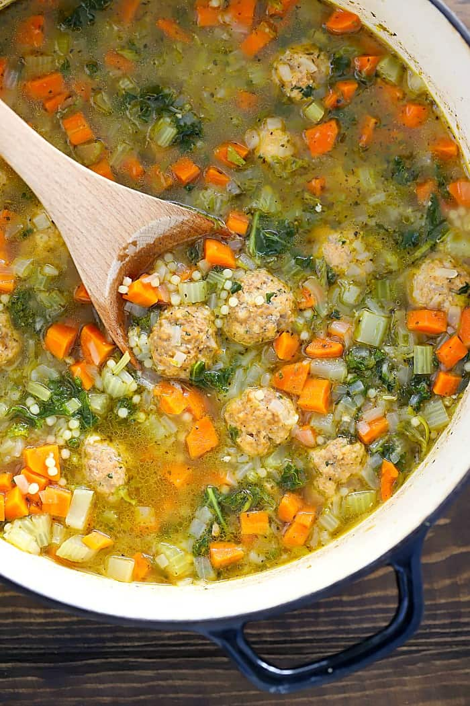

Instant Pot® Italian Wedding Soup Recipe

Description
A delicious and hearty soup with meatballs, pasta, chopped vegetables, and cheese.
This recipe uses an Instant Pot.
Ingredients
- 1 tablespoon olive oil
- 1 1/2 cups chopped carrots
- 1 cups sliced celery
- 1/2 cup diced red onion
- 1 teaspoon dried parsley
- 1/4 teaspoon dried basil
- 1/4 teaspoon ground black pepper
- 6 cups chicken broth
- 20 Italian meatballs
- 1/2 cup pastina pasta
- 6 ounces baby spinach
- 4 teaspoons grated Parmesan cheese
- Salt to taste
Steps
- Turn on a multi-functional pressure cooker (such as Instant Pot®) and select Saute function. Pour in oil and heat until hot.
- Add carrots, celery, and red onion; cook until tender, 4 to 5 minutes.
- Season with parsley, basil, and pepper. Pour in chicken broth and add meatballs.
- Close and lock the lid. Close the valve and select the Soup function according to manufacturer's instructions; set timer for 3 minutes. Allow 10 to 15 minutes for pressure to build.
- Release pressure carefully using the quick-release method according to manufacturer's instructions, about 5 minutes.
- Unlock and remove the lid. Add pastina and stir to combine. Replace the lid.
- Close the valve and select the Soup function according to manufacturer's instructions; set timer for 3 minutes. Allow 10 to 15 minutes for pressure to build.
- Release pressure carefully using the quick-release method according to manufacturer's instructions, about 5 minutes.
- Add spinach and stir. Let soup sit for 5 minutes so pasta will be fully cooked and spinach will be wilted.
- Season with salt to taste.
- Ladle into bowls and top with Parmesan cheese.
Back to top
Back to home